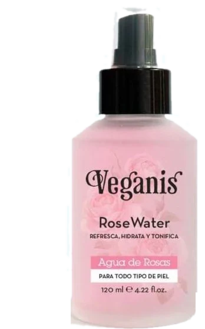

4 farmacias · 4 mundos — N.º 1Recoleta · Edición especialAv. Callao 1450
HoyAbierta online
Botica tradicional ✦ Fundada en 1962
Año LXVEdición n.º 23.580
Farmacia del Centro
Atendida por farmacéuticos, en la misma esquina de Callao
EXTRAPágina 1
La botica de 1962 ahora atiende online
Los mismos farmacéuticos, el mostrador de roble y la cajonera de siempre. Ahora también en tu celular, con envío a tu casa en 2 horas.

Recoleta1962Botica
Desde que Don Ernesto abrió la botica en la esquina de Callao, la caléndula, el agua de rosas y la vaselina se despachan igual: con un consejo. Hoy la Gaceta suma su página en FarmaGlass, con la cajonera de los clásicos, la vitrina del mostrador y las fórmulas para recortar.
En esta edición
- La cajonera pág. 2
- La vitrina pág. 3
- Recortables pág. 4
- Cotizaciones pág. 5
- Consultorio pág. 6
- Visitanos pág. 7